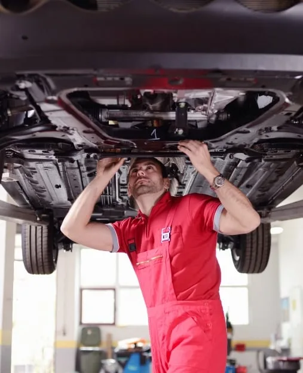
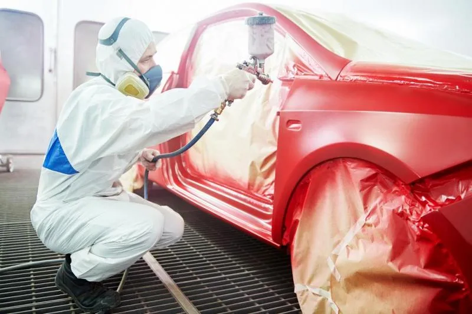
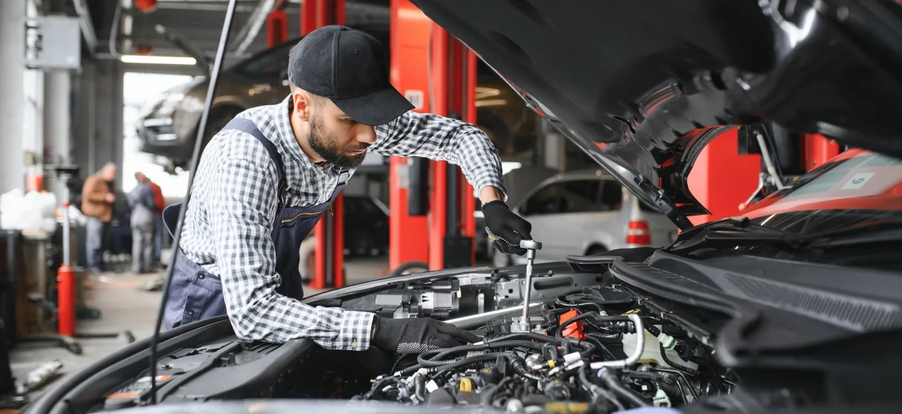
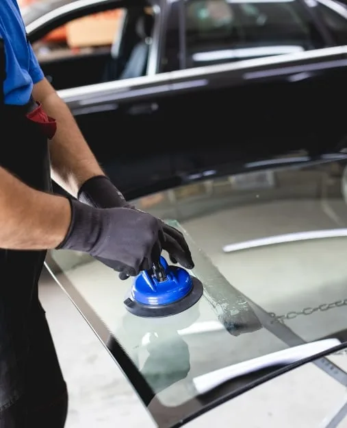
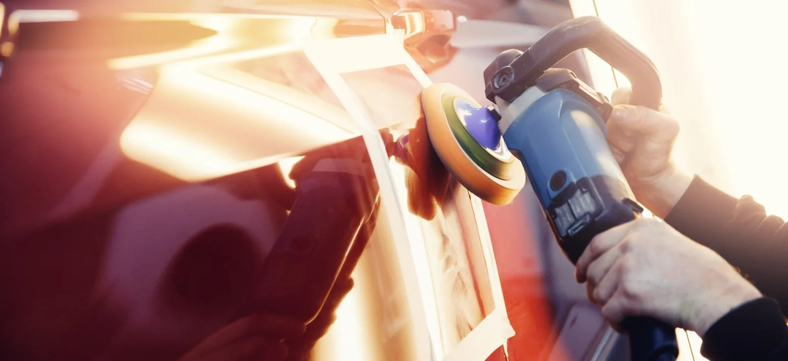
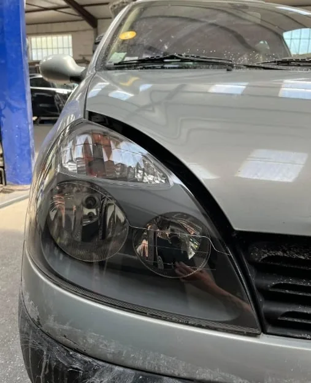

Faites rouler vos mécaniques

Mécaniciens, carrossiers et peintres, sous le même toit.
Toutes marques





L’entretien et la réparation de votre véhicule, à côté de chez vous.
Garage multimarque et multiservice : quelle que soit votre panne, nous sommes en mesure de la résoudre. Et nos carrossiers remettent à neuf la tôle de tout type de véhicule.
Mécaniciens, carrossiers et peintres, sous le même toit.
Toutes marquesNeuville-les-Dames · 03/2025« Je n’ai pas eu de devis préalable mais le montant de la facture était correct pour la prestation. Jamais de mauvaise surprise. »
Neuville-les-Dames · 03/2025« Toujours satisfaite des prestations fournies et de l’accueil. »
Neuville-les-Dames · 03/2025« L’équipe du garage est toujours très réactive à nos demandes, très arrangeante, disponible et compétente. »
Nous savons à quel point une voiture est indispensable au quotidien. Pendant l’immobilisation de la vôtre, nous vous en prêtons une. Remorquage et gardiennage aux horaires d’ouverture.
Prendre rendez-vousPrendre rendez-vous↗En ligne ou par téléphone, le créneau qui vous arrange.
Un chiffrage précis avant toute intervention.
Pour continuer à rouler pendant les travaux.
Travail soigné, facture sans mauvaise surprise.